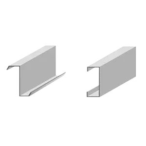
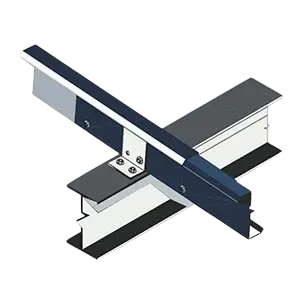
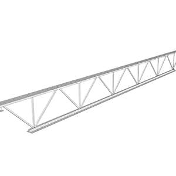

MAIN FRAME
- The main framing basically includes the rigid steel frames of the building. The PESB rigid frame comprises tapered columns and tapered rafters. Flanges shall be connected to webs by means of a continuous fillet weld on one side.
- The main framing basically includes the rigid steel frames of the building. The PESB rigid frame comprises tapered columns and tapered rafters. Flanges shall be connected to webs by means of a continuous fillet weld on one side.
- The main framing basically includes the rigid steel frames of the building. The PESB rigid frame comprises tapered columns and tapered rafters. Flanges shall be connected to webs by means of a continuous fillet weld on one side.
SECONDARY MEMBERS

- Purlins and Girts
- Purlins are used on the roofing structure; Grits are used on the walls and Eave struts are used at the intersection of the sidewall and the roof. Purlins and girts shall be cold-formed “Z” sections with stiffened flanges.

- Purlins and Girts
- Eave struts shall be unequal flange cold-formed “C” sections. Eave struts are 200 mm deep with a 104 mm wide top flange, a 118 mm wide bottom flange, both are formed parallel to the roof slope. Each flange has a 24 mm stiffener lip.

- Purlins and Girts
- Cable bracing is a primary member that ensures the stability of the building against forces in the longitudinal direction such as wind, cranes, and earthquakes. Diagonal bracing in the roof and side walls shall be used.

- Purlins and Girts
- The main use of Open steel web steel joints is to provide support for the roof or floor deck and to transfer the load imposed on the deck to the structural frames (beam and column).